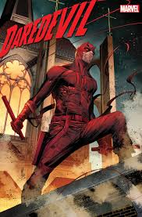

MEUS HEROIS PREFERIDOS
| Nome | Imagem | Resumo |
|---|---|---|
| Arqueiro Verde |  |
Oliver Queen era o típico milionário industrial playboy que, certa noite, bêbado, caiu de seu iate Se viu naufragado numa ilha deserta próxima à costa da Califórnia. Conseguindo se alimentar após fazer um conjunto rústico de arco e flechas para caça e pesca Ele finalmente descobriu o que era viver sem os confortos da civilização. A salvação veio quando um grupo de meliantes desembarcou na ilha (a qual usavam como esconderijo). Queen os pegou de surpresa, tomou seu barco e os entregou à Guarda Costeira. Embora tenha se mantido anônimo, a imprensa local publicou a história e o chamou de Robin Hood moderno. |
| Nome | Imagem | Resumo |
|---|---|---|
| Batman |  |
Sua história teve início após testemunhar o assassinato de seus pais ainda quando criança O que o fez jurar vingança contra os criminosos e treinar todos os dias sozinho Além de criar um personagem baseado em um morcego para combater o crime Foi aí que surgiu Batman, o super-herói da cidade de Gotham |
| Nome | Imagem | Resumo |
|---|---|---|
| Demolidor |  | Nosso Matt é filho de Jack Murodock, um boxeador que quer uma vida melhor para o filho e o incentiva a estudar. Para não desapontar o pai, ele segue o seu desejo, mas treina escondido, então aprende o que vem a usar anos depois. Os seus poderes chegaram na juventude, quando salvou um velhinho de ser atropelado por um caminhão transportando material radioativo. Nesse momento o caminhão derrapou e parte do resíduo tóxico se derramou, atingindo o seu rosto. Foi assim que ele acabou cego, mas também com os seus outros quatro sentidos restantes absurdamente aguçados. |